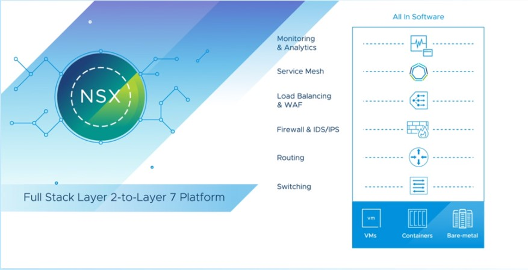
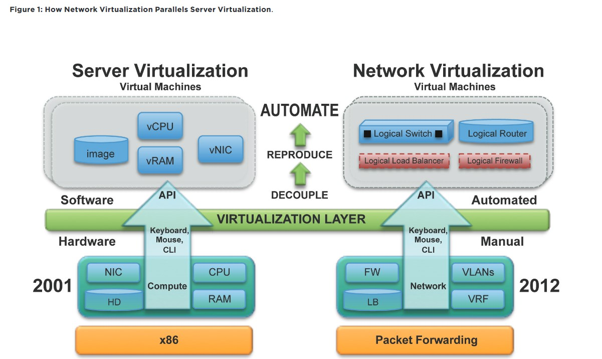
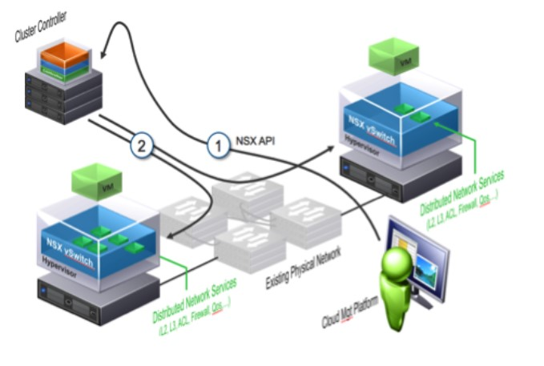
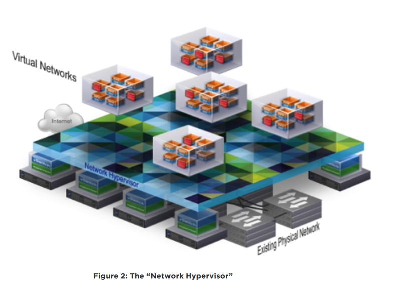
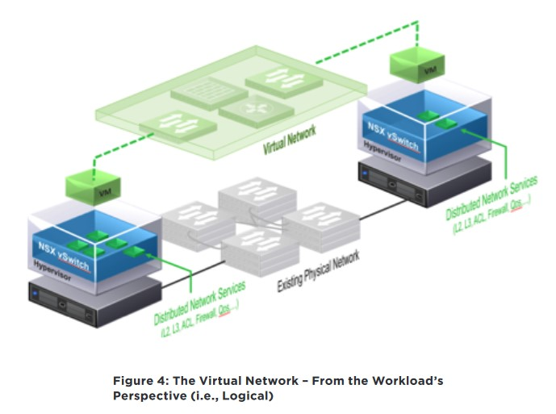
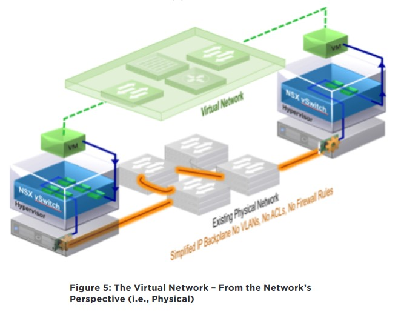

簡單介紹 VMWare NSX Network Virtualization Platform
Contents

VMwatre NSX Network Virtualization Platform 是一個涵蓋 L2 ~ L7 的網路虛擬化平台
是 VMWare 併購 Nicira 後的產物
什麼是網路虛擬化

▲ 圖片來源 The VMware NSX Network Virtualization Platform 白皮書
左邊的 Server Virtualization 是將 Bare-Metal (Hardware,硬體) 透過 Virtualization Layer aka Hypervisor (講白話: 公司用的 VMWare ESXi) 模擬出多個一台電腦所需的硬體資源，並在這個條件上建立 Virtual Mechine (VM)。
各台 VM 在邏輯上可以視為獨立環境 (isolate) 彼此互不干擾、享有獨立資源。實際上還是會發生硬體爭用的情況
延伸相關閱讀 解析 vRealize 發生「BIOS 電源管理未設定為 [由作業系統控制] 」 BIOS power management not set to OS controlled facing CPU contention
將硬體虛擬化的好處是可以充分利用硬體效能、加快部屬時間…. 等
有了初步虛擬化的概念後，右邊這張 Network Virtualization 就不難理解。就是將封包處理的地點從本來的實體網通設備 (Physical Network Device) 拉到 NSX VM 內。但這不代表我們可以完全省去購買網通設備的錢。
VMware 官網列出四大項 VMware NSX-T 帶來的優勢
- 以少許成本進行網路水平擴充
- 同級最佳的安全性，已內建於您的基礎架構之中 (註: NSX 可以讓 LAN to LAN 擁有防火牆，讓區網環境更加安全)
- 現代化分散式應用程式的完整堆疊網路
- 網路與安全性自動化
NSX 如何運作 How it Works
在 vSwitch (不論是 vSS,vStandard Switch 或者 vDS,vDistributed Switch) 都只能做到 L2 的功能。
不過 NSX 也必須基於 vSwitch (由 NSX 去控制 vSwitch 這樣) 的網路環境。直接上圖~

▲ How VMWare NSX Works 1
- 可以想像成 vSphere Client (不精準白話文: vCenter) 透過 NSX 提供的 API 下達網路管理命令
- 接著由 NSX 去管控 vSwitch 達成管理目的

NSX 就好像 “Network Hypervisor”，只不過這台 NSX (NSX-V) 是部屬在基於 VMWare vSphere 的 Hypervisor -> ESXi 的虛擬環境內
介於是與不是之間 全看使用什麼角度去看這塊綠豆糕
另外補充一下 vSwitch 是 ESXi 自帶的功能，NSX 可不是喔!
NSX 裡面的功能 例如: Firewall , VLANs , Load Blance , VPN 都是在 VM 裡面的容器 (Container) 裡面獨立運作
Similar to how a virtual machine is a software container that presents logical compute services to an application, a virtual network is a software container that presents logical network services – logical switches, logical routers, logical firewalls, logical load balancers, logical VPNs and more – to connected workloads.

▲ NSX 運作 (Logical)

▲ NSX 運作 (Physical)
邏輯上封包是透過 NSX 處理，但實際 (物理) 上封包還是要透過實體網通設備來繞送。
以智慧型倉儲 物流共和國 EC Hub 來比喻的話，負責在倉庫內搬運紙箱的機器人就好像 NSX，還是要有開車的物流大哥 (實體網通設備) 來運送不同倉儲之間的包裹。
NSX-V 與 NSX-T 的差異
簡單來說 NSX-V 是 VMWare 最先發布的 SDN (Software Define Network)，只支援 vSphere
後來除了客戶敲碗之外 VMWare 也符合內部的多雲政策，因此推出 NSX-T 就可以支援非 vSphere 的平台，例如: KVM , RedHat 的Openshift , K8s , Docker。
能支援這麼多平台可以歸功於 NSX-T 採用 RESTFul API 的方式 (個人淺見)
參考資料
Author 老柯
LastMod 2022-12-26 (915d30e)